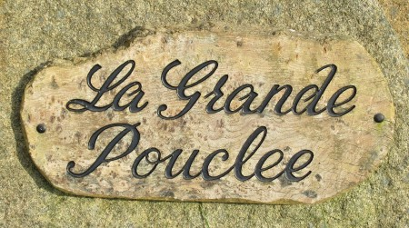
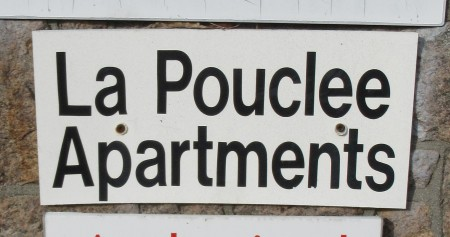
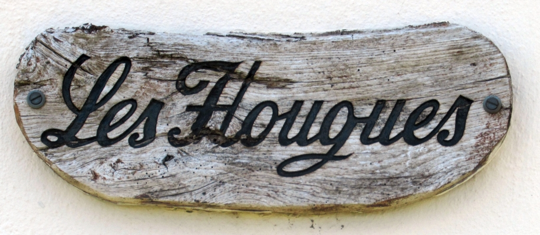
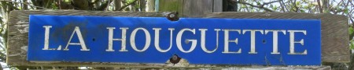

I' faut dithe qué ouaithe qué Jèrri sait eune bein p'tite île par compathaîson auve l'Angliétèrre ou la France, j'avons un tas d'pouquelayes - et v'là tchi veurt dithe qué Jèrri a 'té eune pliaiche bein împortante d'pis les temps les pus anciens. Véthe, les gens préhistorique - dé l'Âge dé Pièrre - avaient deu travailli bein dû pouor êrigi toutes les longues-pièrres tch'existaient ichîn - car y'en a un tas tch'ont 'té dêtruites avaû les siècl'yes - et pis j'avons les tombes - les pouquelayes - qu'nou vait achteu.
Avant l'travas d's archéologistes, nos anchêtres criyaient qué ches pièrres avaient 'té pliaichies par les p'tits faîtchieaux - mais tchi qu'i' y'a tchi n'trouv'thait pon d'magie ou d'chorchell'lie acouo dans la présence dé ches vièrs monûments?
L'pus grand et împortant d'nos dolmens, ch'est La Hougue Bie.
Mais y'a bein d'aut's dolmens tchi méthitent eune vîsite.
| La Pouquelaye d'Faldou (qu'nou vait sus nos pièches Jèrriaises dé dgiêx pénîns) fut êrigie auve eune bouonne veue sus la côte d'la Grand' Tèrre. Ch'tî-chîn est vraînment un dolmen, êtant en forme dé tabl'ye (lé mot dolmen veint du Bréton “daol” tabl'ye et “men” pièrre). | |
| Lé Coup'son s'trouve un mio pus bas. Ch'est bein seux qu'les gens dé chu temps-là avait à grîmper amont l'mont pouor vîsiter la Pouquelaye d'Faldou, mais ch'est întérêssant d'considéther s'i' grîmpaient amont du portélet ou s'i' d'cendaient d'à haut pouor vénîn au Coup'son. Ch'est eune difféthente manniéthe dé pouquelaye, et nou peut êt' surprîns qu'oulle a survêtchu jusqu'aujourd'aniet quand nou vait la poudrett'tie tch'avait 'té bâtie juste à côté. |

|
| La Tabl'ye des Marthes qu'nou pâsse en pédalant ou en marchant l'long du Vièr C'mîn d'Fé juste avant d'arriver à La Corbiéthe n'est pon chein qu'nou s'appelle eune longue pièrre - nou dithait pustôt eune pliate pièrre. Nou dit qu'au temps pâssé les gens soulaient têmoigner des contrats sus chutte pièrre. | |
| La Pouquelaye des Monts Grantez, à St. Ouën, est acouo un monûment plaichi sus un haut lieu auve eune veue spectatchulaithe - chutte fais, sus la Baie d'St. Ouën. |

|
| La Pouquelaye du Mont Ubé éthait ieu eune bouonne veue sans les bouais tchi l'entouôrrent achteu. Chu monûment a souffèrt en êtant fait sèrvi coumme eune cotte à couochons dans l'pâssé. |

|
| La Pièrre du Mitan d'l'Île vînt d'eune pouquelaye dispathue. Pouortchi qu'ch'est s'posé qu'chennechîn est l'mitan d'l'Île? Nou n'sait pon - ch'est p't-êt' eune tradition înventée à ches drein pouor les touristes. |

|
Y'a les pouquelayes d'La Ville ès Nouaux, d'La Sergenté et des Geonnais étout. Y'a des longues-pièrres ès Blianches Banques, et au Pinnacl'ye. Et y'a d'aut's sites mégalithiques en Jèrri étout. Y'a même eune pouquelaye Jèrriaise en Angliétèrre! Quand nou 'tait à dêfoui sus l'Mont d'la Ville pouor eune pathade - chenna avant la bâtithie du fort Régent - nou dêcouvrit eune pouquelaye qu'nou donnit au Gouvèrneux. Quand ch'tî-chîn rentrit en Angliétèrre, i' transportit les pièrres siez li et l's èrêrigit coumme eune tchuthiôsité dans san gardîn à Henley-on-Thames.
Nou dit qu'i' y'a des mios d'Jèrri à touos les bords - et qu'lé pâssé est tréjous auve nous.







Viyiz étout: